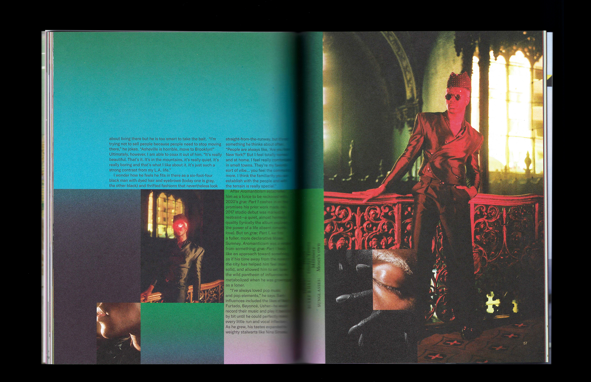
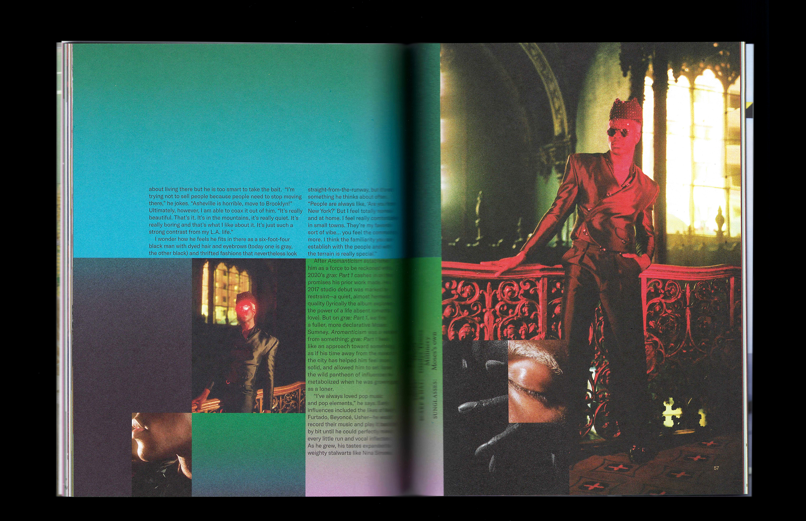

Issue 12
Here Magazine (Away)
Issue (84pp, neon PMS and blind deboss)
2020
Musician Moses Sumney believes in the power of solitude; the restaurateurs of Dallas, Texas, redefine “fine dining;” the designer behind Susan Alexandra packs for woman’s best friend; tune in to the soundtracks of London, Tokyo, and Mexico City; what road trips taught writer Amy Jo Burns about her interracial marriage; a new age for art in Addis Ababa, Ethiopia; life in the slow lane with photographerturned-long-haul-trucker Ry Shorosky; and illustrator Clarissa Liu explores symbols of luck around the world.
Designed with Natalie Shields.

 
